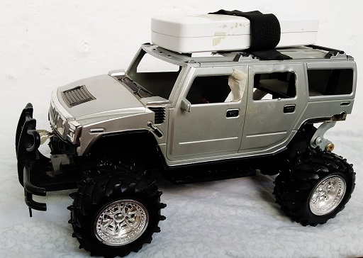

Управление игрушечной машинкой через BlueTooth канал

Постановка задачи
-
Создание андроид приложения для управления игрушечной машинкой посредством BlueTooth канала
-
Разработка и монтаж цифровой электрической схемы с использованием Ардуино модулей
-
Написание программы - скетч для ардуино микроконтроллера
Создание андроид приложения для управления игрушечной машинкой посредством BlueTooth канала
Одним из первых моих андроид приложением, с которого, можно сказать я погрузился в "Мир Андроид", стало
приложение для управления китайской игрушечной машинкой которая раннее управлялась с помощью джойстика через
радиоканал и имела ограниченный функционал команд: прямо - назад - направо - налево. Приложение же на андроиде
предоставляет неограниченный выбор техник, настроек, каким образом и как можно передавать команды, а также принимать
команды/данные с управляемого модуля.